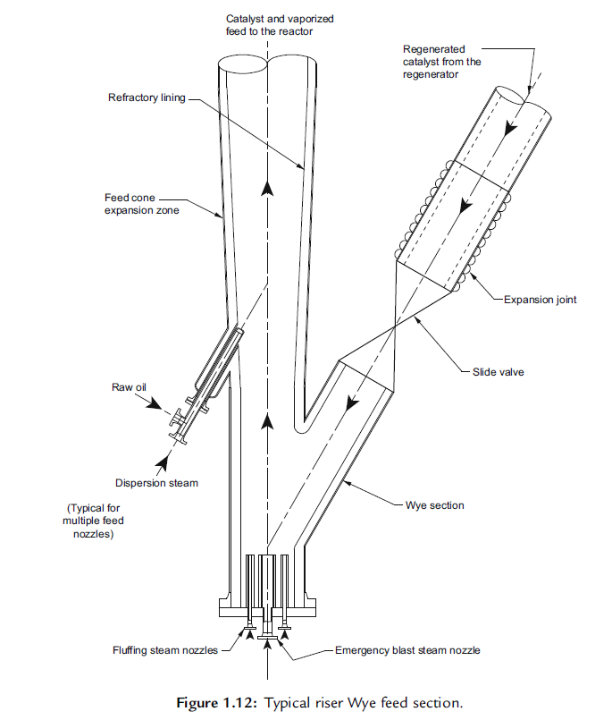
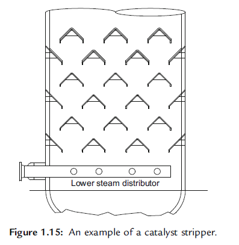
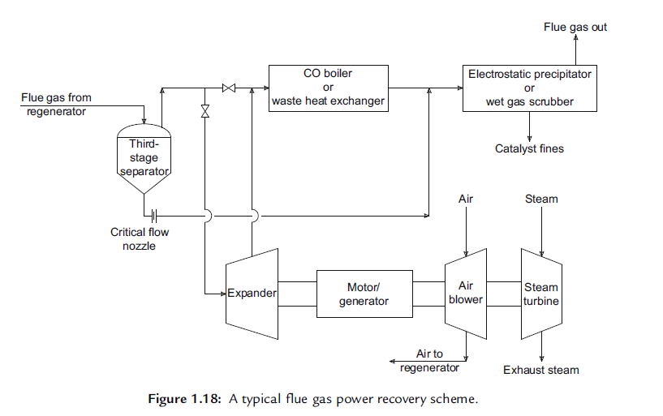
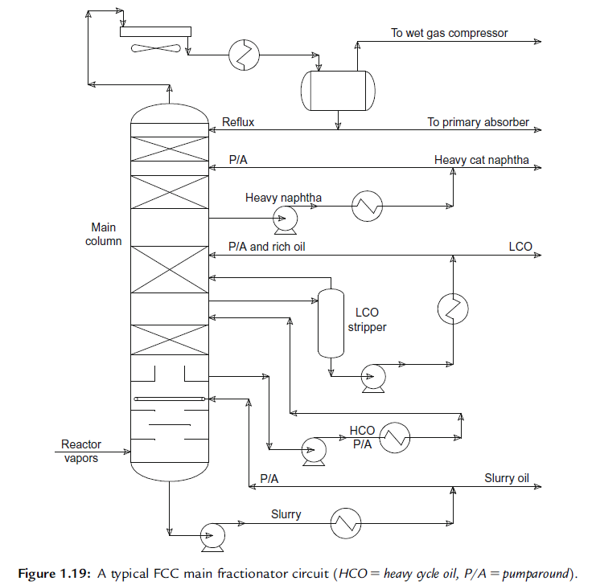
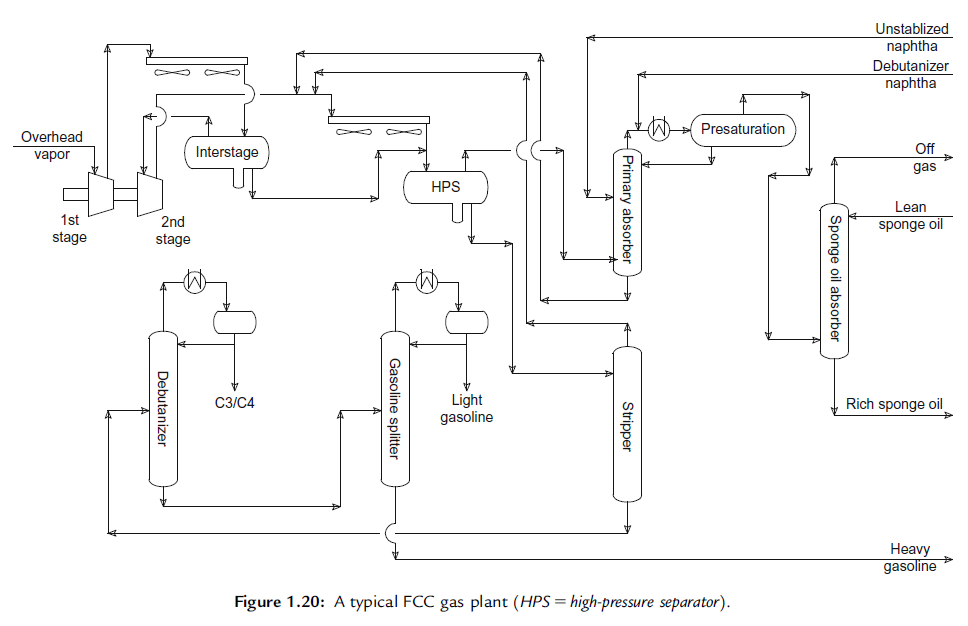

The Fluid Catalytic Cracking (FCC) Process/流化催化裂化工艺
工艺简述¶
在综合炼油厂，流化催化裂化(FCC)工艺一直发挥着关键作用，是从原油制取轻质产品的主要转化工艺。对于很多炼油厂来说，催化裂化装置cat cracker是取得经济效益的关键，它的成功与否决定了炼油厂在当前市场中能否保持竞争力。
在介绍工艺之前，有必要了解典型的催化裂化装置在炼油厂所处的地位。炼油厂由多套加工装置组成，通过这些装置将原油raw crude oil加工转化为有用的产品，如汽油gasoline、柴油diesel、喷气燃料jet fuel和燃料油heating oil。

Raw kerosene 粗煤油； Vacuum unit 减压蒸馏装置； Tar 减压渣油； Gas oil 瓦斯油； Hydro treating 加氢； Sulfur treatment 脱硫； Alky unit 烷基化装置； Isomerization unit 异构化装置； Catalytic reforming 催化重整
原油蒸馏装置是炼油工艺流程中的第一套装置，原油通过蒸馏分成石脑油、煤油、柴油和瓦斯油等几种中间产品。原油中最重的部分不能通过常压塔蒸出，加热后送往减压塔，分割成瓦斯油和减压渣油。从减压塔底出来的减压渣油被送往延迟焦化装置、脱沥青装置、减黏裂化装置或渣油裂化装置进一步加工，或作为燃料油或道路沥青出售。
常规催化裂化装置的原料瓦斯油主要来自常压蒸馏塔、减压蒸馏塔和延迟焦化装置。此外，一些炼油厂将常压或减压渣油掺入FCC装置的原料中进行加工。FCC装置的进料可以是完全加氢处理的、部分加氢处理的或完全未加氢处理的。
FCC工艺非常复杂，为简单起见，将此工艺分成12个部分进行描述。
原料预热¶
Feed preheat
在大多数FCC装置中，瓦斯油进料在从存贮罐和（或）其他单元被送至提升管之前都要先经过预热。预热的热源通常为主分馏塔循环物料、主分馏塔产品和（或）专用的燃气炉。
典型的原料预热温度范围是400-750 °F （205-400°C）。
进料喷嘴—提升管¶
Nozzles—Riser
反应一再生系统是FCC 工艺的核心。在当今的催化裂化装狸中，提升管riser就是反应器。

Typical riser Wye feed section典型的Y形进料段提升管； Fluffing steam nozzles流化蒸汽喷嘴； Refractory lining耐火衬里；
原料与再生催化剂的有效接触对获得理想的裂化反应是很重要的。进料喷嘴借助分散或雾化水蒸气雾化原料，较小的油滴提高了原料与催化剂活性酸中心接触的可能性。实际上采用高活性的沸石催化剂，所有的裂化反应都发生在3秒或更短的时间内。
理想的裂化反应在气相中进行，原料一且被热的再生催化剂气化，裂化反应就会开始，反应油气的体积膨胀是携带催化剂在提升管中上升的主要驱动力。
热的再生催化剂不仅要提供必要的热批以气化原料油和使其达到所需的裂化温度，而且要补偿由千吸热反应所造成的发生在提升管内的“内部冷却“现象。典型的再生催化剂的温度为1250-1350°F（677-732°C） 。裂化或反应器的温度通常为925-1050°F（496-565 °C）。
催化裂化吸热反应，靠再生补充热量
经过裂化反应，一种氢含量很低的物质，即焦炭coke沉积在催化剂上，降低了催化剂的活性。
催化剂分离¶
Catalyst Separation
催化剂从提升管出来后，便进入了沉降器。在当今的FCC装置中，沉降器作为放置用于催化剂分离的旋风分离器cyclones和（或）其他分离装置的场所。FCC装置均采用某种类型的惯性分离装置，与提升管的出口相连，将大部分催化剂与反应油气分开。产品油气从旋风分离器的上部流出后进入主分馏塔。典型的提升管末端设备和上部旋风分离系统的分离效率通常达99.999%以上。
催化剂与反应油气一旦进入沉降器，尽快将其分开是很重要的，尤其当裂化温度超过950°F（510°C）时。否则就延长了催化剂与反应油气在沉降器内的接触时间，导致某些所需产品再进行非选择性催化裂化。停留时间延长也会促进所需产品再进行热裂化反应。当沉降器温度超过950°F（510°C）时，二次裂化反应会普遍发生。
汽提段¶
Stripping Section
吸附在催化剂中的烃类与“待生”催化剂spent catalyst一起进入催化剂汽提段，汽提水蒸气主要用来脱除这些催化剂微粒catalyst’s pores夹带的烃蒸气。汽提水蒸气通常不能使催化剂微孔中的烃类脱附，因而裂化反应继续在汽提段内进行。较高的温度、较长的停留时间使烃类转化为“clean lighter”产品。
工业上最常用的使下行催化剂与上行汽提水蒸气接触的设备有栏板shed trays、圆形或环形挡板disk/donut baffles以及结构填料structural packing等。

应当尽量减少催化剂携带烃类蒸气进入再生器的量，但是并非所有烃类蒸气都可以在汽提段从催化剂微孔中脱附，其中一部分随待生催化剂进入再生器。这些烃蒸气/液体具有比催化剂上的坚硬焦炭更高的氢碳比。
富氢烃类进入再生器的不良影响
液体产品损失。如果这些烃类不在再生器中被烧掉，应该可以作为液体产品回收。
生产能力降低。过多的烃类燃烧所造成的再生器温度上升会超过再生器构件所能承受的温度极限，迫使装罚降低进料速度。
催化剂活性损失。较高的再生器温度及再生器中水蒸气的存在，会破坏催化剂的晶体结构，从而降低催化剂活性。
待生催化剂通过控制阀使汽提段的催化剂维持在所需的高度，以防止热烟道气逆向进入沉降器中。
再生器——热量和催化剂回收¶
Regenerator—Heat/Catalyst Recovery
再生器有三个主要作用：
- 恢复催化剂活性；
- 为裂化反应提供热量；
- 将流化催化剂输送至进料喷嘴。
进入再生器的待生催化剂通常含有0.5-1.5%（质量分数）的焦炭，焦炭的主要成分为碳、氢及痕量的硫和有机氮分子。
应用一台或多台主风机为焦炭燃烧提供氧气，主风机为催化剂在床层中保持流化状态提供足够的空气流速和压力。一些FCC装置需购买氧气来补充燃烧用空气。空气或氧气通过一个位于靠近再生器底部的空气分配系统进入再生器。
传统的鼓泡床再生器分为密相和稀相两段，再生器中气体线速度一般为2-4\, ft/s \, (0.6-1.2\, m/s) ，大部分催化剂微粒集中在空气分配器上方的密相床层，稀相段在密相床层上方直到旋风分离器入口，具有较低的催化剂浓度。
部分燃烧和完全燃烧¶
Partial Versus Complete Combustion
催化剂在一定的温度范围内可以再生，再生过程有两种截然不同的燃烧方式：部分燃烧和完全燃烧。
完全燃烧产生较多的能量且焦炭产率低，而部分燃烧产生较少的能址且焦炭产率高。
在完全燃烧过程中，过量的反应物为氧气，因而较多的碳产生较多的燃烧
在部分燃烧过程中，过量的反应物为碳，所有的氧气都被消耗，因而焦炭产率增加就意味着\ce{CO2}转变为\ce{CO}
FCC再生方式可以进一步分为低温再生、中温再生和高温再生。
在低温再生（大约1190°F或640°C)过程中，完全燃烧是不可能的。低温再生的一个特征是在1190°F，三种组分(O_2, \ce{CO}, \ce{CO2}) 在烟气中都有较高的含量。
高温再生是指提高温度直至所有的氧气都被燃烧掉，结果主要是再生催化剂的含碳量降低。采用这种再生方式，烟气中或者有少量过量氧气而没有\ce{CO}, 或者没有过量氧气而有不定量的\ce{CO}。如果氧气过量，则操作方式为完全燃烧；如果\ce{CO}过量，则操作方式为部分燃烧。
随着设计适当的空气/待生催化剂分配系统和\ce{CO}助燃剂combustion promoter的使用，再生温度可以降低，而再生催化剂仍可保持完全燃烧模式。
| 再生器燃烧操作区 | 部分燃烧方式 | 完全燃烧方式 |
|---|---|---|
| 低温(1190°F/640°C) | 烟气中(O_2, \ce{CO}, \ce{CO2})含量稳定（少量的尾燃） | 不能实现 |
| 中温(1275°F/690°C) | 使用助燃剂时操作稳定，再生催化剂含碳量高 | 使用助燃剂时操作稳定 |
| 高温(1350°F/730°C) | 操作稳定 | 操作稳定 |
与部分燃烧相比，完全燃烧具有的优缺点如下：
Advantage：
- 能量充足；
- 焦炭产率低时能维持热平衡；
- 装置设备少（无\ce{CO}锅炉）；
- 应用清洁催化剂时可以得到较高产率
Better yields； - 环境友好；
Disadvantage：
- 除非安装取热系统，否则焦炭产率的适应范围较窄；
- 较多的尾燃
afterburn，特别是在空气或待生催化剂分配系统不均匀时； - 剂油比低；
选择部分燃烧还是完全燃烧要根据FCC原料性质而定。加工“清洁原料”，应选择完全燃烧方式；加工劣质原料或渣油，应选择部分燃烧，可能还需要取热系统。
再生催化剂立管和滑阀¶
Regenerated Catalyst Standpipe/Slide Valve
经过再生，催化剂上的焦炭一般会降至0.1%以下，从再生器出来后，催化剂向下流入输送管，即通常所说的立管。立管提供必需的压头使催化剂在装置内循环。
一些立管伸入再生器，其顶端通常称为“催化剂料斗”catalyst hopper。有些装置的再生催化剂通过外部回收料斗进料。在再生器内部的催化剂料斗为锥形设计。
立管直径根据循环催化剂流率确定，流率范围通常为750-1500kg/(m^2 \cdot s)。对多数短立管而言，足够的烟气随再生催化剂一起流下以使其保持流化状态；对于较长的立管，则需要外部注入气体以确保催化剂保持流化状态fluidized，通过沿着立管的长度方向间歇注入某种气体介质，如空气、水蒸气或氮气可以达到这一目的。在设计较好的立管中，催化剂流动密度在560-720kg/m^3之间。
再生催化剂流向提升管的流速通常由滑阀或塞阀控制。它的主要作用是供应足够的催化剂以加热原料并达到所需的裂化温度。
烟气离开再生器密相dense phase段时，会夹带催化剂颗粒，夹带械主要取决于烟气在再生器中的空速。较大的催化剂颗粒(50~90μm) 回落到密相床，而较小的催化剂颗粒(0~50μm) 悬浮在稀相dilute phase段，被带入旋风分离器。
大多数FCC装置的再生器采用2~20组一级和二级旋风分离器。旋风分离系统设计为可回收直径大千15μm的催化剂颗粒，回收的催化剂通过料腿diplegs返回再生器。
烟气余热余压回收措施¶
Flue Gas Heat and Pressure Recovery Schemes
烟气离开旋风分离器进入再生器顶部的集气室，高温烟气携带大量的能量，在一些装置中，烟气被送往\ce{CO}锅炉，显热和燃烧热都被用于产生高压蒸汽；在另外一些装置中，烟气通过利用管壳式换热器或箱式换热器与锅炉给水换热以产生蒸汽；在一些大中型FCC装置中，可以利用烟机回收压力能。伴随着压力回收，烟气温度会降低约200°F（93°C）。为保护烟机叶片免受催化剂颗粒的侵蚀，烟气首先进入第三级分离器分离出催化剂粉尘。第三级分离器可以从烟气中分离出70%-95%的粉尘。
典型的烟气能量回收示意图

Electrostatic precipitator静电除尘器； Wet gas scrubber湿气洗涤塔； Catalyst fines催化剂粉尘； Exhaust steam乏汽； Air blower主风机； Steam turbine汽轮机； Expander烟机
烟气能量回收系统通常采用四机组：烟机、电动机/发电机、主风机和汽轮机。汽轮机主要用于开工，并且经常作为烟机发电不足的补充。在一些FCC装置中，烟机的动力超过驱动主风机所需的动力，过剩的动力通过电动/发电机输出到炼油厂电力系
统。如果烟机所产生的动力低于主风机所需的动力，电动/发电机就为动力系统保持所需的速度而提供动力。
催化剂处理设施¶
Catalyst Handling Facilities
催化剂活性会随着使用时间的延长而降低。活性损失的原因主要是由于FCC原料中存在杂质及再生器中的高温和水热失活。为维持反应所需的活性，需向装置中不断加入新鲜催化剂。新鲜催化剂储存在新鲜催化剂料斗中，在大多数装置中，通过催化剂装载机自动加入到再生器中。
在FCC装置中循环的催化剂通常称为平衡催化剂或简单地称为E-cat。一定量的平衡催化剂定期卸出并储存在E-cat 料斗中，后期进行处置。结合使用质量较好的E-cat与新鲜催化剂，是保持低的催化剂成本的经济有效的方法。
即使反应器和再生器的旋风分离系统运转正常，小千20μm的催化剂微粒仍然会从这些设备中逸出。在大多数FCC装置中，来自反应器旋风分离系统的催化剂粉尘与油浆产品一起被送至储存罐中。
再生器烟气中残留的催化剂粉尘通常通过烟气洗涤塔、ESP或设计适当的三级/四级旋风分离系统回收。
主分馏塔¶
Main Fractionator
主分馏塔的作用是使高温反应油气降温并回收液体产品。从反应器出来的高温蒸气产物从靠近底部的位置进入主分馏塔。烃类蒸气在塔中向上流经塔板和（或）填料，通过烃组分的冷凝和重新气化而完成分馏过程。

Heavy cat naphtha重石脑油； Slurry oil油浆；
主分馏塔的操作与原油蒸馏塔类似，但有两点不同之处：第一，在分馏开始之前，反应器流出的蒸气必须经过冷却。第二，大量气体与不稳定汽油一起到达塔顶，需要进一步分离。
塔底
主分馏塔的底部为换热区。用来促进气液接触的设备有人字挡板、圆形/环形塔盘以及栅格填料等。反应油气由几股循环物料降温并冷却。冷的循环物料还作为洗涤介质洗去夹带在蒸气中的催化剂细粉。
从主分馏塔塔底油回收的热量通常用于预热新鲜原料、发生蒸汽、作为气体分馏装置再沸器的加热介质等。从主分馏塔出来的最重的塔底产品通常称为油浆或澄清油(DO)slurry, clarified, or decant oil。油浆经常用作“沥青稀释油”cutter stock与减压渣油一起生产6号燃料油。优质油浆（低硫、低金属、低灰分）可以用作生产炭黑的原料。
侧线
在塔底产品以上，主分馏塔通常设计有三个侧线：
- 重循环油
Heavy cycle oil(HCO)： 作为侧线回流，有时返回至提升管，但很少作为产品； - 轻循环油
Light cycle oil(LCO)： 作为侧线回流，有时作为气体分馏装置的吸收油，汽提后作为柴油/燃料油的调和组分； - 重石脑油： 作为侧线回流，有时作为气体分馏装置的吸收油，也可能作为汽油调和组分。
在许多装置中，LCO是唯一可以作为产品的侧线物料。LCO从主分馏塔出来后通过侧线汽提塔也作轻柴油汽提塔控制闪点，LCO通常经过脱硫处理后作为燃料油的调和组分。
HCO、重石脑油和其他侧线回流物流都用于从主分馏塔取热，为气体分馏装置再沸器提供热扯并产生蒸汽从每一个回流点所取得的热量都用于使塔内蒸气和液体负荷均匀分布，提供必要的塔内回流。
塔顶
不稳定汽油和轻质气体通过主分馏塔后，以蒸气形式离开。塔顶流出油气在主分馏塔塔顶冷凝器冷却并部分凝结，然后流入一个塔顶接收罐，烃蒸气、烃类液体和水在塔顶接收罐中分离。
烃蒸气流入湿气压缩机wet gas compressor（也称为富气压缩机，WGC)，此气体物流中不仅含有乙烷及更轻的气体，而且还含有超过95%的C3/C4组分以及大约10%的石脑油。“湿气”是指气体物流中含有可凝结的组分。
从塔顶接收罐出来的烃类液体被分为两部分，一部分用泵输送回主分馏塔进行回流，一部分进入气体分馏装置。冷凝水也分开，一部分用泵输送回塔顶冷凝器作为洗涤水，一部分被抽走进行处理。在一些装置中，从塔顶接收罐出来的含硫污水也用于洗涤WGC出口冷却器。
气体吸收装置¶
Gas Plant
FCC气体吸收装置将不稳定汽油和轻质气体分为：燃料气、C_3, C_4组分、汽油；
C_3, C_4组分（液化石油气）包括丙烧、丙烯、正丁烷、异丁烷和丁烯。

Lean sponge oil贫吸收油； Sponge oil absorber再吸收塔； Stripper气提/解吸塔；
气体吸收装置从WGC开始，通常使用两级离心压缩机。在大多数两级压缩系统，从压缩机的第一级排放口排出的蒸气部分冷凝，并在级间闪蒸罐闪蒸，从级间闪蒸罐出来的蒸气进入二级压缩机，二级压缩机排出的气体通过一个冷却器进入HPS。
HPS出来的蒸气流入一级吸收塔，而液体则由泵输送至汽提塔。HPS实质上是位于一级汽提塔和吸收塔之间具有器外冷凝器的分离设备。
一级吸收塔¶
Primary Absorber
塔顶流出蒸气含有大量的C3及更重的组分，一级吸收塔的作用就是回收这些组分。蒸气从底部塔板下面进入，向上流动与吸收油接触，重组分被吸收油吸收。
塔中所用吸收油通常有两个来源：
第一种是来自于主分馏塔塔顶接收器main fractionator overhead receiver的烃类液体，这部分物料通常称为“粗料”wild，粗汽油，或不稳定石脑油，从顶部塔板下面几个塔板处进入吸收塔。
第二种吸收油是冷却的脱丁烷汽油debutanized gasoline, 稳定汽油，一般从顶部塔板进入，它的蒸气压较低，可以认为是补充吸收剂。
脱丁烷汽油和从塔顶接收器来的不稳定石脑油通常称为“贫油”lean oil。
吸收过程是放热过程。为提高C3＋组分的回收率，将一个或多个中间塔板的液体用泵输送至一个中间冷却器后再返回到下面的塔板。在一些FCC装置中，贫油料（稳定汽油）要经过冷却处理。
预饱和
为增强C3＋组分的回收能力，一些装置安装了预饱和罐，作为辅助的吸收段。操作过程中，冷却的脱丁烷汽油与吸收塔塔顶流出气混合（预饱和），混合物在预饱和罐中冷却并闪蒸，然后预饱和罐中的液体用泵输送至一级吸收塔的塔顶。
二级吸收塔/再吸收塔¶
Sponge Oil or Secondary Absorber
从一级吸收塔和预饱和罐出来的蒸气中含有少量的汽油，再吸收塔的作用就是回收这些汽油。
贫吸收油从顶部塔板之上进入吸收塔，而从预饱和罐或一级吸收塔来的气体从底部塔板之下进入吸收塔。富吸收油从塔底流出，返回主分馏塔。贫气从塔顶流出吸收塔，进入胺法脱硫装置脱除\ce{H2S}，然后进入炼油厂燃气系统。
“二级吸收油“通常是经过汽提或未经汽提的LCO，用它来对干气进行最后的吸收处理。一些装置不使用LCO，而将从主分馏塔来的重石脑油冷却后作为二级吸收油。
汽提塔/脱乙烷塔/解吸塔¶
Stripper or De-ethanizer
HPS分离出的液体主要含有C3组分和更重的烃类化合物，还含有少量的C2组分、H2S及夹带的一些水，汽提塔的作用是除去这些轻质馏分。
液体从顶部塔板进入汽提塔。汽提所需的热量由外部的再沸器提供，加热介质为蒸汽或脱丁烷塔塔底油。从再沸器来的蒸气在塔中向上流动，汽提出向下流动液体中的轻馏分。塔顶流出富气经冷凝器回到HPS，并作为一级吸收塔的原料。汽提后的石脑油由塔底流出进入脱丁烷塔。
脱丁烷塔/稳定塔¶
Debutanizer/Stabilizer
解吸塔塔底油含有C3、C4组分和汽油，脱丁烷塔的作用是从汽油中分离出C3和C4组分。
在一些装置中，汽提塔热塔底油进入脱丁烷塔前可进一步预热利用分馏塔气提柴油加热；而另一些装置中，汽提塔塔底油直接进入脱丁烷塔。原料从塔的中部进入后，由于脱丁烷塔的操作压力低于解吸塔/汽提塔，原料总是会部分汽化。这一压力降通过控制阀调节汽提塔塔底油液面的方式来实现。由于这个压降，部分原料通过控制阀而汽化。
脱丁烷塔将原料分离为两种产品，塔顶流出的产品包括C3和C4组分的混合物，塔底产品为稳定汽油。分离这些产品所需的热量由外部再沸器提供，热源一般为主分馏塔HCO或油浆采用分馏一中段油，也可以使用蒸汽。
塔顶流出产品全部在塔顶冷凝器冷凝，塔顶流出液体的一部分用泵抽出并返回塔作为回流，剩余部分送往脱除H2S和其他硫化合物的处理装置。混合C3和C4物流可作为烷基化装置的原料，或作为脱丙烧塔的原料将C3组分从立组分中分离出来。C3组分被进一步加工用作石油化工原料，C4组分则进行烷基化反应alkylated。
脱丁烷汽油首先通过向汽提塔再沸器供热或预热脱丁烷塔的原料而冷却，然后再经过一组空气或水冷却器。一部分脱丁烷塔底油作为贫油用泵输送回预饱和罐或一级吸收塔，剩余部分通过脱硫处理，作为炼油厂的汽油调和组分。
汽油分割塔¶
Gasoline Splitter
一些炼油厂将脱丁烷汽油分割成“轻”汽油和“重”汽油。当汽油调和受到硫含量和芳烃含量限制时，可以优化炼油厂汽油组成。在一些汽油分割塔，第三种“核心馏分”被排出，这种中间馏分辛烷值较低low in octane，需在其他装置中进一步改质加工。
水洗系统¶
Water Wash System
催化裂化原料中含有一定浓度的有机硫和氮化合物。
有机氮化合物裂化后会释放出氰化氢(\ce{HCN})hydrogen cyanide、氨(\ce{NH3})及其他氮化合物。有机硫化合物裂化后会产生硫化氢(\ce{H2S})及其他硫化合物。
FCC气体分馏装置中存在潮湿环境，水来自于主分馏塔塔顶冷凝器中工艺水蒸气的冷凝。在\ce{H2S}，\ce{NH3}和\ce{HCN}存在时，此环境容易导致腐蚀发生。腐蚀可能是下列类型中的一种或全部:
(1) 由硫氢化按引起的一般腐蚀；
(2) 氢鼓泡和（或）脆化；
(3) 污垢沉积物下的麻点状腐蚀。
腐蚀机理
硫氢化胺是由氨与硫化氢反应而生成：
硫氢化胺对钢铁有极强的腐蚀性，腐蚀产物是氢气和硫化铁。反应一般为自终止反应，因为硫化铁覆盖在金属表面会形成保护膜，抑制进一步腐蚀。 但是，当氰化物存在时，硫化铁就会脱落，硫氢化物腐蚀就不再是自终止反应。
氰化胺会溶解在潮湿的环境中并离解成氰离子和胺离子，氰离子与不溶性的硫化铁反应生成可溶性的铁氝配合物，这就破坏了硫化铁保护膜，暴露出的新鲜金属进一步腐蚀。随着腐蚀的进行，产生的氢原子便渗入金屈表面，引起氢鼓泡，导致应力腐蚀开裂(SCC)。
化学反应如下：
1. 氰化氢的生成：
- 氰化胺的形成：
- 氰化胺在水中离解：
- 氰化胺的腐蚀：
待补充
处理设施¶
Treating Facilities
气体分馏装置的产物，即燃料气、凡组分、立组分和汽油，含有硫化合物需要处理。气体分馏装置产物中的杂质本质上是酸性的
使用胺和碱性溶液可脱除这些杂质，链烷醇胺的胺溶剂可脱除\ce{H2S}和\ce{CO2}。硫化氢是有毒气体，对于炼油厂加热炉及锅炉，\ce{H2S}最大含量一般为160 \times 10^{-6}胺可以脱除大量\ce{H2S}，伯胺还可以脱除\ce{CO2}。胺处理不能有效地脱除硫醇，而且它不能脱除足够的\ce{H2S}以满足铜片腐蚀试验。因此，在胺处理装置下游设置了碱处理这－最后的精加工步骤。
待补充
小结¶
FCC是炼油厂最重要的转化工艺之一。这一工艺包括了化学工程基本原理的大部分内容，如流化、传热/质和蒸馏。工艺的核心是反应器——再生器系统，自1942年以来，大多数创新都出现在反应器——再生器系统。
FCC装置将低价值、高沸点的原料转化为有价值的产品，如汽油和柴油。FCC工艺效率非常高，仅有大约5%的原料用作过程的燃料。在反应过程中，焦炭沉积在催化剂上，并在再生器中烧掉，提供反应所需的全部热量。
从反应器来的产物在主分馏塔和气体分馏装置中回收，主分馏塔从汽油和更轻的产品中回收重质产物，如LCO和DO。气体分馏装置将主分馏塔塔顶流出蒸气分离成汽油、C3、C4和燃料气。由于产物中含有硫化物，因此在使用前需要进行处理，联合应用胺洗和碱洗方法以脱除这些产品中的硫。